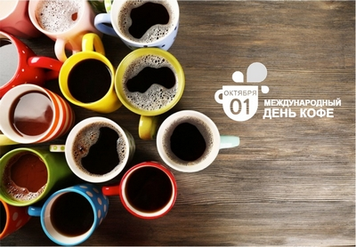

1 октября - Международный день кофе

Долгое время у нашего любимого напитка не было официального праздника: в Америке день кофе отмечали 29 сентября, в Швейцарии — 16 мая, а в Ирландии до сих пор гуляют целую неделю, посвященную Айриш кофе.
Только в 2015 году Международная Кофейная Организация (ICO) официально объявила 1 октября Международным днем кофе.